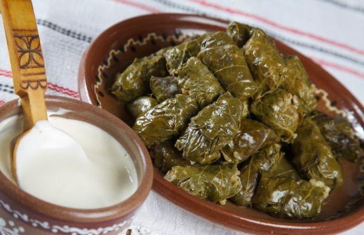

Rețete
Zeamă din găină de casă

o găină de casă
1 ardei dulce
1 morcov
2 cartofi medii
1 ceapă
Sare, cimbru uscat, borș acru, pătrunjel verde
1 ou, făină- pentru tăieței
Sarmale

500 g carne tocata amestec porc-vita (50% - 50%)
1 ceapa medie tocata fin
50 g orez crud
200 g rosii in conserva (sau in bulion), zdrobite cu furculita
o mana buna de marar si patrunjel verde (tocate fin)
1 lingurita rasa de sare
½ lingurita de piper negru proaspat macinat
1,5 kg de varza murata (cu foi fine, subtiri)
2 linguri bune de untura pentru uns forma (sau 3 linguri de ulei)
200 g rosii in conserva (sau in bulion)
1 cutie mica de pasta concentrata de rosii (cca. 2 linguri bune)
ramurele de cimbru uscat
200 g afumatura (kaiser, costita, bacon) - optional
1 cana de bors pentru acrit suplimentar (optional)
Borș scăzut

1 kg costițe de porc
4-5 morcovi
2-3 cepe
0,5 l suc de roșii
Foi de dafin și piper negru boabe
Apă
Tocană de porc cu mămăligă

600 g carne de porc
40 g slănină
5 cepe
2-3 căţei de usturoi
foi de dafin, sare și piper negru măcinat
pătrunjel verde
roșii
Crap prăjit în mălai cu mujdei și mămăliguță

2 kg de pește proaspăt (crap, caras, novac, lin etc)
sare, piper
mălai (făină de porumb)
cca. 500 ml ulei de floarea soarelui
mujdei simplu sau cremos (sarmuzac)
mămăligă
Ciulama de iepure cu fasole

500 gr carne de iepure – pulpe, muşchi, gât
2 conserve de 400 gr fasole roşie
1 ceapă
3 roşii
1 ardei iute
pătrunjel verde
piper, boia de ardei, sare
ulei
Cîrnăciori la grătar cu muștar

1 cârnat subțire și lung, înfășurat în formă de roată, prins cu bețe de frigărui
250ml cidru
2 linguri de muștar franțuzesc KAMIS (cel cu boabe)
2 linguri de miere
puțin ulei pentru grătar sau prăjit
Cifteluțe moldovenești în sos de roșii

500 g carne tocata de vita
6 căţei usturoi
1 ceapa mica
2 oua
3 linguri pesmet
2 linguri patrunjel
chimen, sare, piper, ulei
Pentru sos:
1 lingură ulei
1 ceapă
1 cutie mare rosii în bulion
125 ml vin rosu sec
1 lingurita zahar
1 praf sare
chimen macinat, piper
Salată de roşii cu brânză şi măsline

roșii
castraveți
1 ceapa verde sau roșie
1 cățel de usturoi
brînză sărată sau de oi
măsline
Pentru dressing:
ulei de măsline extravirgin
puţin busuioc uscat sau oregano
un strop de suc de lămâie - uneori
sare după gust
busuioc verde - opţional
Salată de legume proaspete cu smântână

3 roșii
2 castraveți
1/2 ceapa verde sau roșie
1 cățel de usturoi
3 linguri de smântână
piper, sare